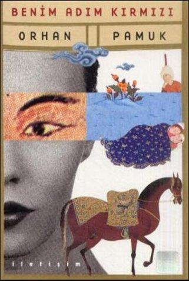
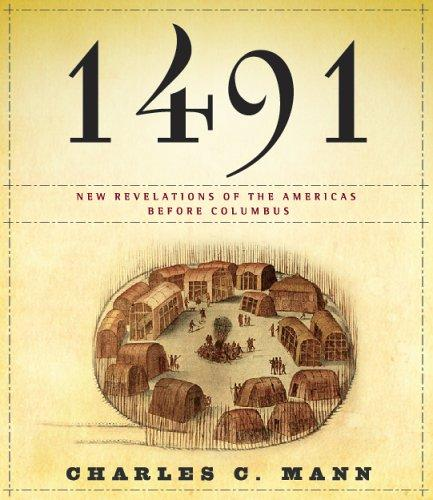
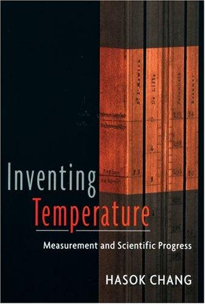
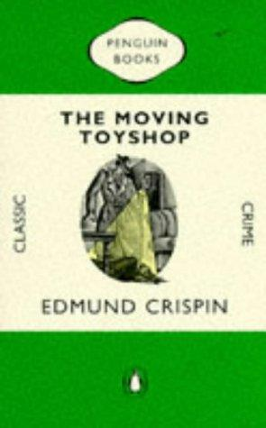
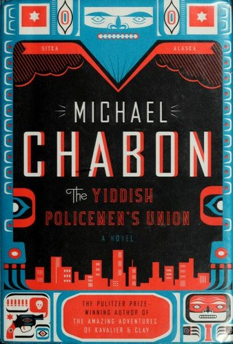

weekly digest
Week 2026-35
Recommendations for the week of 24 August 2026.
Three distinct growth edges this week, deliberately spread. The translated non-Western literary shelf reaches Turkey for the first time — a murder mystery narrated in rotation by suspects, a corpse, a coin and a colour, ideas-first about seeing and the clash of Islamic and Western ways of picturing the world. Narrative nonfiction opens a genuinely new domain in pre-Columbian history, dismantling the "pristine wilderness" myth with archaeology and demography. And the philosophy of uncertainty pushes past the Bayesian frame into the epistemology of measurement — how knowledge bootstraps itself upward with no foundation to stand on. The comfort picks stay in the well-loved veins but reach for fresh authors: a vertiginous big-object hard-SF classic, a witty self-aware Golden-Age Oxford mystery, and a hardboiled noir welded to counterfactual world-building.
Highbrow



Lowbrow


